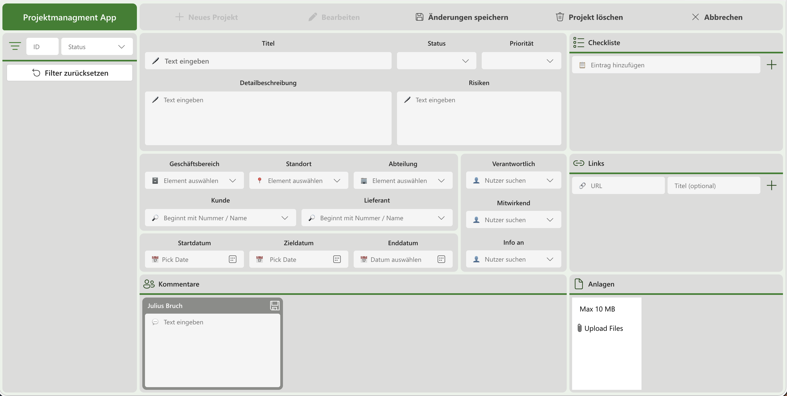

Power Apps | SharePoint Lists | Document Library

A comprehensive project management dashboard built with Power Apps. It connects seamlessly with multiple SharePoint lists and a document library to provide a centralized hub for project tracking, task management, and team collaboration.
Teams now manage all project-related data and files from a single interface. The solution improved data consistency, eliminated scattered Excel trackers, and significantly boosted team collaboration and project visibility.
Let's build a unified app to bring all your SharePoint lists and libraries together.
Get in Touch